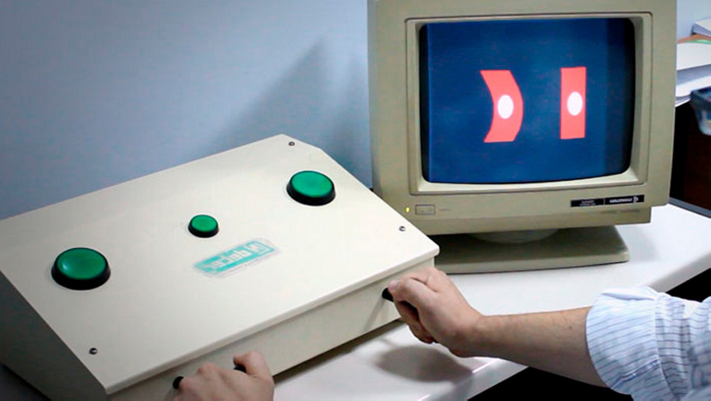
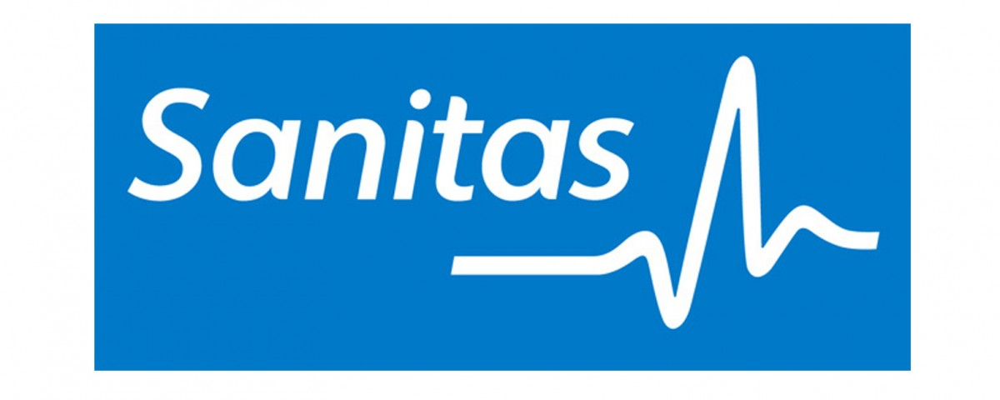
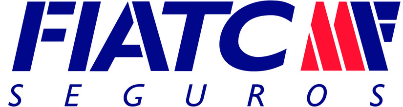
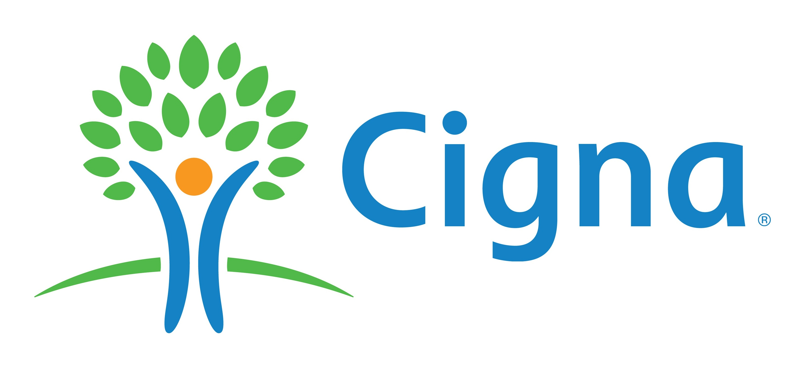

Los mejores profesionales con pasión por la salud de nuestros pacientes.
El Centro Médico El Castro Porriño nace con el compromiso de cuidar de su salud y la de su familia.Nuestro personal toma decisiones basadas en la investigación y se mantiene al tanto de las últimas innovaciones. Nuestra experiencia nos permite utilizar los últimos y más avanzados tratamientos.
Nuestro objetivo es hacer todo lo posible para que usted se sienta seguro y cómodo durante su estancia.
Un equipo de profesionales comprometido para cuidarle como se merece
Llevamos su salud en nuestro corazón.
Nuestro directorio de especialistas y nuestra capacidad tecnológica permiten brindar atención en prácticamente cualquier especialidad médica.En Centro Médico El Castro Porriño usted encontrará una completa atención y procedimientos para diversas especialidades como Cardiología, Ginecología, Pediatría, Traumatología y Urología, entre otras. Consulte con nosotros su caso particular.
Sin embargo, más allá de la tecnología, nuestros personal hace la diferencia. Nos aseguramos de que esté capacitado para ser extremadamente eficaz en el diagnóstico y tratamiento de su problema, porque queremos que usted se sienta seguro y tranquilo
Tu salud es nuestra pasión.
Cuidar la salud de las personas es una vocación. Sumarle a ello una rigurosa capacitación en las diferentes especialidades que ofrecemos, nos permite garantizar la mejor atención.Estamos preparados para hacer sentir bien a nuestros pacientes.
Psicotécnicos
| Carnet de Conducir | Permisos de Armas |
|  |
| Títulos Náuticos | Operadores de Grúas |
| Animales Peligros |
Compañías Aseguradoras
|  |
|  |
|  |